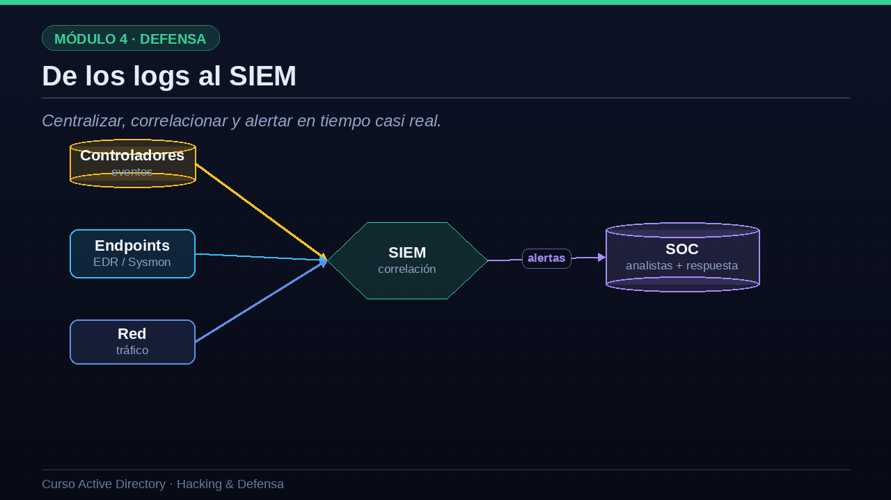
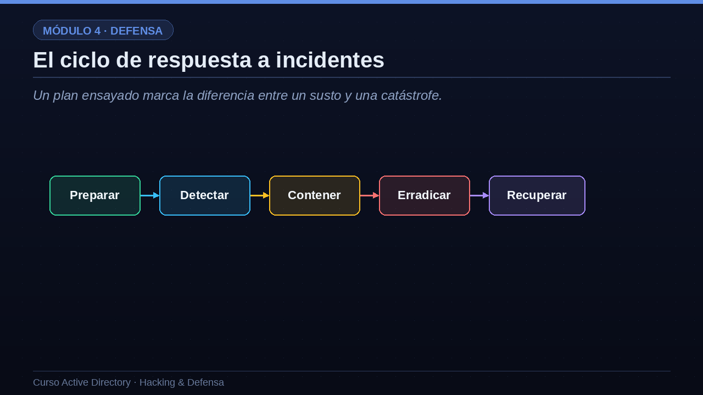

01Eventos de Windows que delatan un ataque
Los controladores registran huellas; hay que saber cuáles mirar.
Empecemos por lo más fundamental: los registros de eventos que generan los propios controladores. Windows deja huellas de casi todo, pero hay que saber cuáles vigilar. El evento cuatro mil setecientos sesenta y nueve registra las peticiones de tickets de servicio; muchas con cifrado RC4 delatan un Kerberoasting. El cuatro mil setecientos sesenta y ocho registra peticiones de TGT, útil para ver AS-REP Roasting. Los eventos cuatro mil seiscientos veinticuatro y veinticinco son los inicios de sesión, correctos y fallidos, que revelan fuerza bruta y movimiento lateral. El cuatro mil seiscientos sesenta y dos, cuando aparece con permisos de replicación, es una señal clásica de DCSync. El cuatro mil seiscientos setenta y dos indica el uso de cuentas con privilegios especiales. Y el siete mil cuarenta y cinco avisa de la instalación de un servicio nuevo, la firma típica de PsExec. Conocer este puñado de eventos es el abecé de la detección en Active Directory.
| Evento | Qué indica | Ataque asociado |
|---|---|---|
| 4769 | Petición de ticket de servicio (RC4) | Kerberoasting |
| 4768 | Petición de TGT anómala | AS-REP Roasting |
| 4624 / 4625 | Inicio de sesión / fallido | Fuerza bruta, movimiento lateral |
| 4662 | Acceso a objeto con replicación | DCSync |
| 4672 | Privilegios especiales asignados | Uso de cuentas privilegiadas |
| 7045 | Servicio nuevo instalado | PsExec / ejecución remota |
02De los logs al SIEM
Centralizar, correlacionar y alertar en tiempo casi real.
Un evento aislado en un controlador no sirve de mucho; la clave es centralizarlo todo. Para eso está el SIEM, el sistema de gestión de eventos de seguridad. El SIEM recoge los registros de varias fuentes a la vez: los eventos de los controladores de dominio, la telemetría de los endpoints a través de soluciones EDR o del agente Sysmon, y los datos del tráfico de red. Con todo junto, el SIEM hace su magia: la correlación. Por ejemplo, un inicio de sesión fallido no alarma, pero cincuenta inicios fallidos seguidos de uno exitoso y, acto seguido, la instalación de un servicio remoto, es un patrón de ataque claro. El SIEM detecta esas combinaciones y genera alertas, que llegan al SOC, el centro de operaciones de seguridad, donde los analistas investigan y lanzan la respuesta. Este flujo, de los logs al SIEM y del SIEM al analista, es la columna vertebral de la detección moderna.

03Herramientas especializadas en identidad
Más allá del SIEM genérico, existen herramientas especializadas en proteger la identidad. Microsoft Defender for Identity, antes conocido como ATA, se instala junto a los controladores, analiza su tráfico y su comportamiento, y detecta de forma nativa ataques como DCSync, Golden Ticket o la fase de reconocimiento, con muy pocos falsos positivos. Sysmon es un agente gratuito de Microsoft que aporta una telemetría riquísima: creación de procesos, conexiones de red y, muy valioso, los accesos al proceso LSASS, que delatan a Mimikatz. Los honeytokens, que ya mencionamos, son cuentas y objetos trampa cuyo único propósito es ser tocados por un atacante; como nadie legítimo los usa jamás, una alerta sobre ellos es casi siempre un incidente real. Y herramientas como PingCastle permiten medir el nivel de exposición del dominio con una puntuación, y seguir su evolución en el tiempo, algo muy útil para justificar y priorizar las mejoras de seguridad.
- Microsoft Defender for IdentityAnaliza el tráfico de los DC y detecta DCSync, Golden Ticket, recon...
- SysmonTelemetría detallada de procesos, red y acceso a LSASS.
- HoneytokensCuentas y objetos trampa que alertan con altísima fiabilidad.
- Auditoría avanzada + PingCastleMedir el nivel de exposición del dominio y su evolución.
04El ciclo de respuesta a incidentes
Un plan ensayado marca la diferencia entre un susto y una catástrofe.
Cuando la alerta se confirma, entra en juego la respuesta a incidentes, que sigue un ciclo bien definido. Preparar es la fase previa: tener el plan escrito, los contactos claros, las copias de seguridad probadas y, idealmente, haber ensayado el escenario. Detectar es identificar y confirmar que hay un incidente real, apoyándose en todo lo que acabamos de ver. Contener es frenar la hemorragia: aislar los equipos afectados, deshabilitar las cuentas comprometidas, cortar el acceso del atacante sin avisarle antes de tiempo. Erradicar es eliminar su presencia: borrar el malware, cerrar las puertas traseras y, si krbtgt se vio comprometido, rotarlo dos veces. Y recuperar es restaurar los sistemas de forma segura y volver a la normalidad vigilando que el atacante no regrese. Una organización que ha ensayado este ciclo responde en horas; una que improvisa puede tardar semanas y sufrir un daño mucho mayor. El plan marca la diferencia entre un susto y una catástrofe.

05Las ideas que debes recordar del curso
Antes de despedirnos, quedémonos con las tres grandes ideas que atraviesan todo el curso. Primera: asume la brecha. Un defensor maduro no solo intenta prevenir, también detecta y responde, porque ningún sistema es inexpugnable y la pregunta no es si te atacarán, sino cuándo. Segunda: en Active Directory, la identidad es el perímetro. Ya no basta con proteger la frontera de la red; controlar las credenciales y los privilegios es, literalmente, controlarlo todo. Y tercera: defensa en profundidad. A lo largo del curso has visto que ninguna medida basta por sí sola; es la suma de muchas capas, hardening, segmentación, detección y respuesta, la que de verdad protege el dominio. Si interiorizas estas tres ideas, tendrás la mentalidad correcta para administrar o defender cualquier Active Directory.
la brecha
Prevenir, pero también detectar y responder. Nadie es inexpugnable.
es el perímetro
En AD, controlar las credenciales es controlarlo todo.
defensa en profundidad
Ninguna medida basta sola; es su suma la que protege.
“La seguridad de Active Directory no es un producto que se instala, sino un proceso que se mantiene cada día.”Conclusión del curso
Y con esto cerramos el curso. La seguridad de Active Directory no es un producto que se instala una vez y se olvida, sino un proceso que se mantiene cada día. Has recorrido el camino completo: desde qué es un dominio y cómo funciona por dentro, pasando por cómo lo administra una empresa, cómo lo ataca un adversario paso a paso, y cómo se defiende con hardening, detección y respuesta. Ahora tienes una visión de trescientos sesenta grados, la misma que comparten los mejores administradores y los mejores profesionales de seguridad. Te animo a montar tu laboratorio, practicar cada técnica con responsabilidad y seguir profundizando. Gracias por acompañarme en este curso de Active Directory, hacking y defensa. Mucha suerte, y nos vemos en la red.